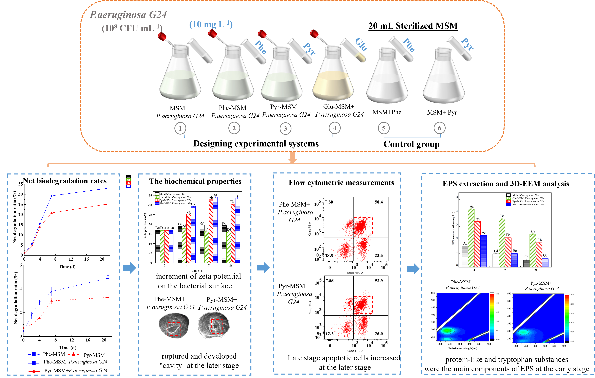
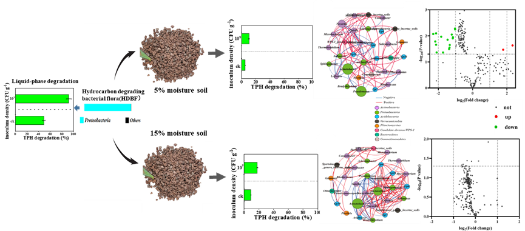
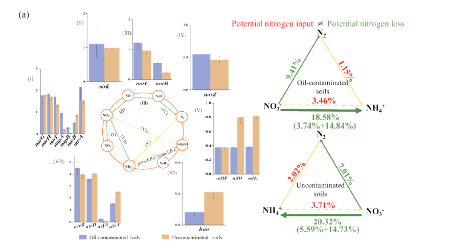

Gao Huan
Email / CV / Google Scholar / LinkedIn
About Me
I am a Ph.D. student majoring in environmental engineering. My main research focus on microbial remediation of organic pollutants and the dsorption of organic pollutants by ecological materials.
Research Interests
- Bioremediation of organic pollutants
- the dsorption of organic pollutants by ecological materials
News
- [June. 2024] Our paper about Effects of biochar immobilization of Serratia sp. F4 OR414381 on bioremediation of petroleum contamination and bacterial community composition in loess soil is accepted to JHM.
- [June. 2023] Our paper about Cell toxic damages during PAHs biodegradation is accepted to JWPE.
- [Mar. 2023] Our paper about positive effect of soil moisture on the Bioaugmentation is accepted to ME.
- [Sept. 2022] Our paper about bioremediation potential of petroleum-contaminated soils is accepted to Chemosphere.
- [Nov. 2021] Our paper about effect of petroleum hydrocarbon pollution levels on the soil is accepted to EP.
- [May. 2020] Our paper about effect of haracteristics of bacterial communities on the soil is accepted to ME.
Publications
-
 JWPEJournal of Water Process Engineering(JWPE), 2023.
-
 MEMicrobial Ecology (ME), 2023.
-
 EPEnvironmental Pollution(EP), 2022.
 ME
ME
Research
Research Experience
the National Natural Science Foundation of China 2022-2024 the National Natural Science Foundation of China 2021-2023
Conference Oral report
National Environmental Conference for Doctoral Students (NECDS) 2021 The 8th National Conference on Environmental Chemistry (NCEC) 2015
Powered by Jekyll and Minimal Light theme.